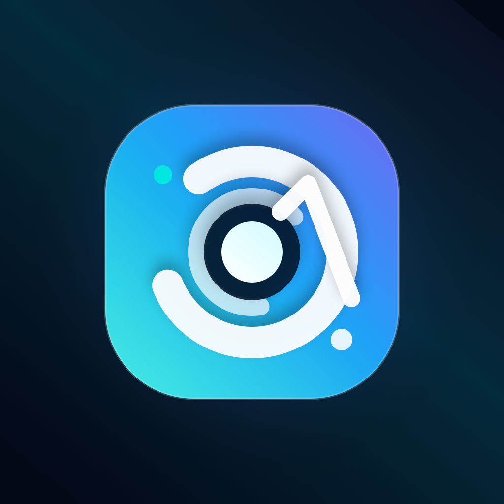
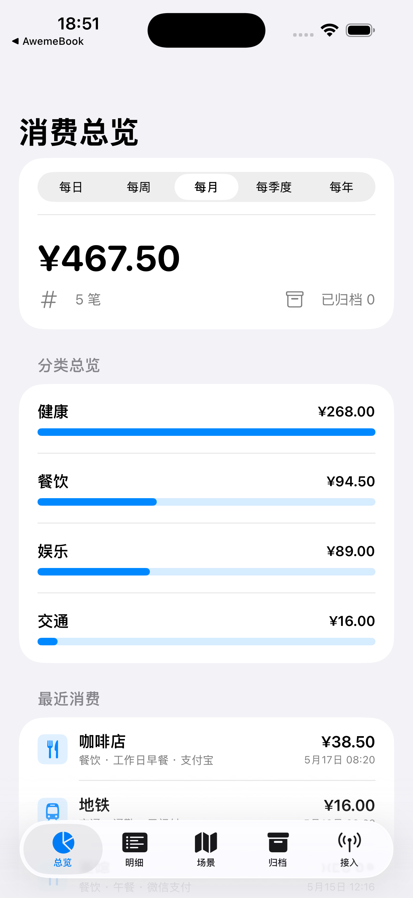

支付后截图
保留支付 App 的账单截图，适合支付宝、微信、云闪付和银行通知页面。

消费管家概览
每笔消费进入统一视图，按周期、分类和场景拆开看，月底不用再翻聊天通知和支付账单。

流程
保留支付 App 的账单截图，适合支付宝、微信、云闪付和银行通知页面。
通过分享面板、快捷指令或 URL Scheme，把最新截图送入消费管家解析。
识别金额、商户、时间和类别，生成可追溯的消费明细与周期报告。
归档
本地优先
消费管家以本地归档为核心，截图识别失败时才使用系统 OCR 兜底。敏感信息不需要出现在公开表格或聊天记录里。